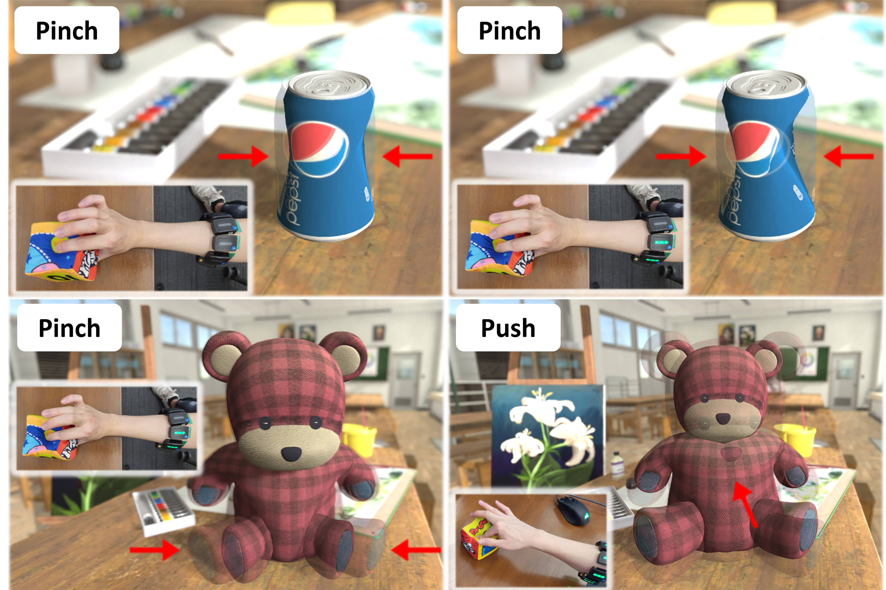

|
Welcome! I'm a first-year Computer Science PhD student advised by Prof. Qi Sun in the Immersive Computing Lab at New York University. My current research revolves around virtual/augmented reality, human-computer interaction, computational photography/imaging, and machine learning. Prior to NYU, I obtained my MPhil in Information Engineering at The Chinese University of Hong Kong under the supervision of Prof. Dahua Lin, where I researched at the intersection of computer graphics, computer vision, and machine learning. Before that, I did my undergraduate studies at Shanghai Jiao Tong University and École Polytechnique through a double-degree program. Outside of work, I love traveling, hiking, and taking photos. |

|

|
Yunxiang Zhang, Kenneth Chen, Qi Sun Under Review (2023) |
|  |
Yunxiang Zhang, Benjamin Liang, Boyuan Chen, Paul M. Torrens, S. Farokh Atashzar, Dahua Lin, Qi Sun ACM Transactions on Graphics (SIGGRAPH Asia 2022) Paper / Project Page / Video |

|
Christopher A. Choquette-Choo*, Natalie Dullerud*, Adam Dziedzic*, Yunxiang Zhang*, Somesh Jha, Nicolas Papernot, Xiao Wang International Conference on Learning Representations (ICLR 2021) Paper / Project Page / Video |

|
Chenglong Zhao, Yunxiang Zhang, Bingbing Ni IEEE Transactions on Circuits and Systems for Video Technology (TCSVT 2023) Paper |

|
Yunxiang Zhang, Samy Blusseau, Santiago Velasco-Forero, Isabelle Bloch, Jesus Angulo International Symposium on Mathematical Morphology and Its Application to Signal and Image Processing (ISMM 2019) Paper |
|
Template borrowed from Jon Barron. |